Pad Printing Analysis
Tyler Jones 08/08/2023
- This program reads data from the TD11840- excel files and analyzes how different metrics have evolved in time.
- For more details, please visit: https://tjjones6.github.io/CadenceInternship/padPrinting.html
Contents
- Read Data and Write Basic Calculations to Command Window
- Average Calculations
- Gross Scrap Cost
- Average scrap cost
- Plot Scrap Per Good Part
- Recent Scrap Per Good Part (Animated)
- Gross Scrap Cost vs Time (Animated)
- Good Parts vs Time
- Gross Good Parts
- Gross Good Parts vs Time (Animated)
- Good Parts % vs Time (Animated)
- Gross Bad Parts (Animated)
- Bad Parts % vs Time (Animated)
- Gross Bad Parts vs Time (Animated)
Read Data and Write Basic Calculations to Command Window
close all; clear; clc; % Read data in from excel as a table GoodPartsTable_2022 = readtable('TD11840_2022.xlsx','Range','H42:H95'); BadPartsTable_2022 = readtable('TD11840_2022.xlsx','Range','I42:I95'); GoodPartsTable_2023 = readtable('TD11840_2023.xlsx','Range','H56:H128'); BadPartsTable_2023 = readtable('TD11840_2023.xlsx','Range','I56:I128'); ScrapTable_2022 = readtable('TD11840_2022.xlsx','Range','L42:L95'); Scrap_2022 = table2array(ScrapTable_2022); ScrapTable_2023 = readtable('TD11840_2023.xlsx','Range','L56:L128'); Scrap_2023 = table2array(ScrapTable_2023); ScrapCostTable_2022 = readtable('TD11840_2022.xlsx','Range','K42:K95'); ScrapCostTable_2023 = readtable('TD11840_2023.xlsx','Range','K56:K128'); % Sum of Good and Bad Parts GoodParts_2022 = table2array(GoodPartsTable_2022)'; TotalGoodParts_2022 = sum(GoodParts_2022); BadParts_2022 = table2array(BadPartsTable_2022)'; TotalBadParts_2022 = sum(BadParts_2022); Days_2022 = 1:length(GoodParts_2022); GoodParts_2023 = table2array(GoodPartsTable_2023)'; TotalGoodParts_2023 = sum(GoodParts_2023); BadParts_2023 = table2array(BadPartsTable_2023)'; TotalBadParts_2023 = sum(BadParts_2023); Days_2023 = 1:length(GoodParts_2023); ScrapCost_2022 = table2array(ScrapCostTable_2022)'; TotalScrapCost_2022 = sum(ScrapCost_2022); ScrapCost_2023 = table2array(ScrapCostTable_2023)'; TotalScrapCost_2023 = sum(ScrapCost_2023); % Averages AveGoodParts_2022 = TotalGoodParts_2022/length(GoodParts_2022); AveBadParts_2022 = TotalBadParts_2022/length(BadParts_2022); AveGoodParts_2023 = TotalGoodParts_2023/length(GoodParts_2023); AveBadParts_2023 = TotalBadParts_2023/length(BadParts_2023); DiffAveGoodParts = abs(AveGoodParts_2023-AveGoodParts_2022); % Scrap Percentage ScrapPercentage_2022 = 100*TotalBadParts_2022/(TotalGoodParts_2022+ ... TotalBadParts_2022); SP_2022 = sprintf('2022 Scrap Percentage: %.2f%%', ... ScrapPercentage_2022); disp(SP_2022); SC_2022 = sprintf('2022 Total Scrap Cost: $%.2f ', ... TotalScrapCost_2022); disp(SC_2022); ScrapPercentage_2023 = 100*TotalBadParts_2023/(TotalGoodParts_2023+ ... TotalBadParts_2023); SP_2023 = sprintf('2023 Scrap Percentage: %.2f%%', ... ScrapPercentage_2023); disp(SP_2023); SC_2023 = sprintf('2023 Total Scrap Cost: $%.2f ', ... TotalScrapCost_2023); disp(SC_2023);
2022 Scrap Percentage: 1.92% 2022 Total Scrap Cost: $1267.59 2023 Scrap Percentage: 8.10% 2023 Total Scrap Cost: $4024.37
Average Calculations
GoodPartsNow_2022 = zeros(size(1:length(Days_2022))); for i = 1:length(Days_2022) GoodPartsNow_2022(i) = sum(GoodParts_2022(1:i)); end BadPartsNow_2022 = zeros(size(1:length(Days_2022))); for i = 1:length(Days_2022) BadPartsNow_2022(i) = sum(BadParts_2022(1:i)); end GoodPartsNow_2023 = zeros(size(1:length(Days_2023))); for i = 1:length(Days_2023) GoodPartsNow_2023(i) = sum(GoodParts_2023(1:i)); end BadPartsNow_2023 = zeros(size(1:length(Days_2023))); for i = 1:length(Days_2023) BadPartsNow_2023(i) = sum(BadParts_2023(1:i)); end ScrapCostNow_2022 = zeros(size(1:length(Days_2022))); for i = 1:length(Days_2022) ScrapCostNow_2022(i) = sum(ScrapCost_2022(1:i)); end AveScrapCostNow_2022 = zeros(size(1:length(Days_2022))); for i = 1:length(Days_2022) AveScrapCostNow_2022(i) = sum(ScrapCost_2022(1:i)/Days_2022(i)); end ScrapCostNow_2023 = zeros(size(1:length(Days_2023))); for i = 1:length(Days_2023) ScrapCostNow_2023(i) = sum(ScrapCost_2023(1:i)); end AveScrapCostNow_2023 = zeros(size(1:length(Days_2023))); for i = 1:length(Days_2023) AveScrapCostNow_2023(i) = sum(ScrapCost_2023(1:i)/Days_2023(i)); end AveScrapCost_2022 = TotalScrapCost_2022/length(Days_2022); AveScrapCost_2023 = TotalScrapCost_2023/length(Days_2023);
Gross Scrap Cost
figure plot(Days_2022,ScrapCostNow_2022); hold on plot(Days_2023,ScrapCostNow_2023); xlabel('Time') ylabel('Scrap Cost') title('Scrap Cost vs Time') legend('2022 Scrap Cost','2023 Scrap Cost',Location='nw')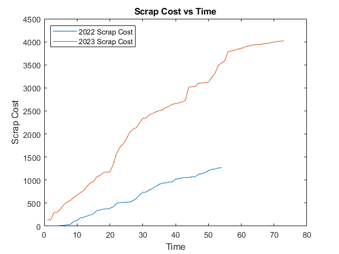
Average scrap cost
figure plot(Days_2022,AveScrapCostNow_2022); hold on % plot(Days_2022,ones(size(1:length(Days_2022)))*AveScrapCost_2022) plot(Days_2023,AveScrapCostNow_2023); % plot(Days_2023,ones(size(1:length(Days_2023)))*AveScrapCost_2023) xlabel('Time') ylabel('Average Scrap Cost') title('Moving Average Scrap Cost vs Time') legend('2022 Moving Avg Scrap Cost','2023 Moving Avg Scrap Cost')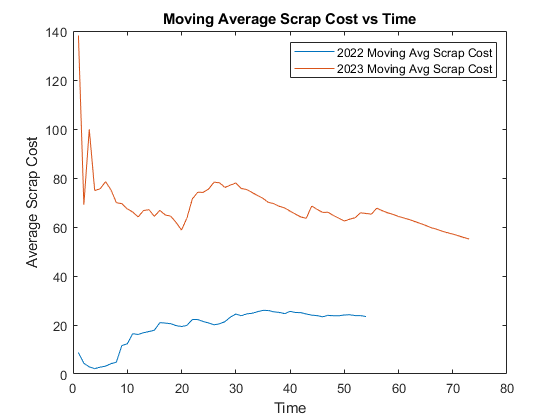
Plot Scrap Per Good Part
ScrapPercNowAnim_2022 = NaN(1,max(Days_2022),'single'); ScrapPercNowAnim_2023 = NaN(1,max(Days_2022),'single'); ScrapPercDiff = NaN(1,max(Days_2022),'single'); ScrapPercAvg_2022 = NaN(1,max(Days_2022),'single'); ScrapPercAvg_2023 = NaN(1,max(Days_2022),'single'); ScrapPercAvgDiff = NaN(1,max(Days_2022),'single'); n = 100; ScrapPercFig = figure('Units','pixels','position',[0 0 1440 1080]); for j = 1:length(Days_2022) clf % ScrapPercNowAnim_2022(j) = sum(ScrapCost_2022(1:j))/(sum(BadParts_2022(1:j) + GoodParts_2022(1:j))); ScrapPercNowAnim_2022(j) = sum(ScrapCost_2022(1:j))/(sum(GoodParts_2022(1:j))); ScrapPercAvg_2022(j) = mean(ScrapPercNowAnim_2022(1:j)); % ScrapPercNowAnim_2023(j) = sum(ScrapCost_2023(1:j))/(sum(BadParts_2023(1:j) + GoodParts_2023(1:j))); ScrapPercNowAnim_2023(j) = sum(ScrapCost_2023(1:j))/(sum(GoodParts_2023(1:j))); ScrapPercAvg_2023(j) = mean(ScrapPercNowAnim_2023(1:j)); ScrapPercDiff(j) = abs(ScrapPercAvg_2023(j) - ScrapPercNowAnim_2022(j)); ScrapPercAvgDiff(j) = abs(ScrapPercAvg_2023(j) - ScrapPercAvg_2022(j)); plot(Days_2022,ScrapPercNowAnim_2022,'Color','blue'); hold on plot(Days_2022,ScrapPercNowAnim_2023,'Color','red'); plot(Days_2022,ScrapPercAvg_2022,"-.",'Color','black'); plot(Days_2022,ScrapPercAvg_2023,"-.",'Color','black'); text(1,(26+3)/n, sprintf('2022 Normalized Scrap Cost ($/good part): $%.3f',ScrapPercNowAnim_2022(j))) text(1,(25.5+3)/n, sprintf('2023 Time-Equivalent Normalized Scrap Cost ($/ good part): $%.3f',ScrapPercNowAnim_2023(j))) text(1,(25+3)/n, sprintf('Average Normalized Scrap Cost Difference: $%.3f',ScrapPercAvgDiff(j))) text(1,(24.5+3)/n, sprintf('Absolute Normalized Scrap Cost Difference: $%.3f',ScrapPercDiff(j))) xlim([0 54]) ylim([0 (30+3)/n]) xlabel('Time') ylabel('Normalized Scrap Cost ($/good part)') title('Normalized Scrap Cost vs Time') legend('2022 Normalized Scrap Cost','2023 Normalized Scrap Cost','2022 Average','2023 Average',Location='nw') movieVector(j) = getframe(ScrapPercFig); end myWriter = VideoWriter('ScrapPercentageVsTime','MPEG-4'); myWriter.FrameRate = 5; open(myWriter); writeVideo(myWriter, movieVector); close(myWriter); clc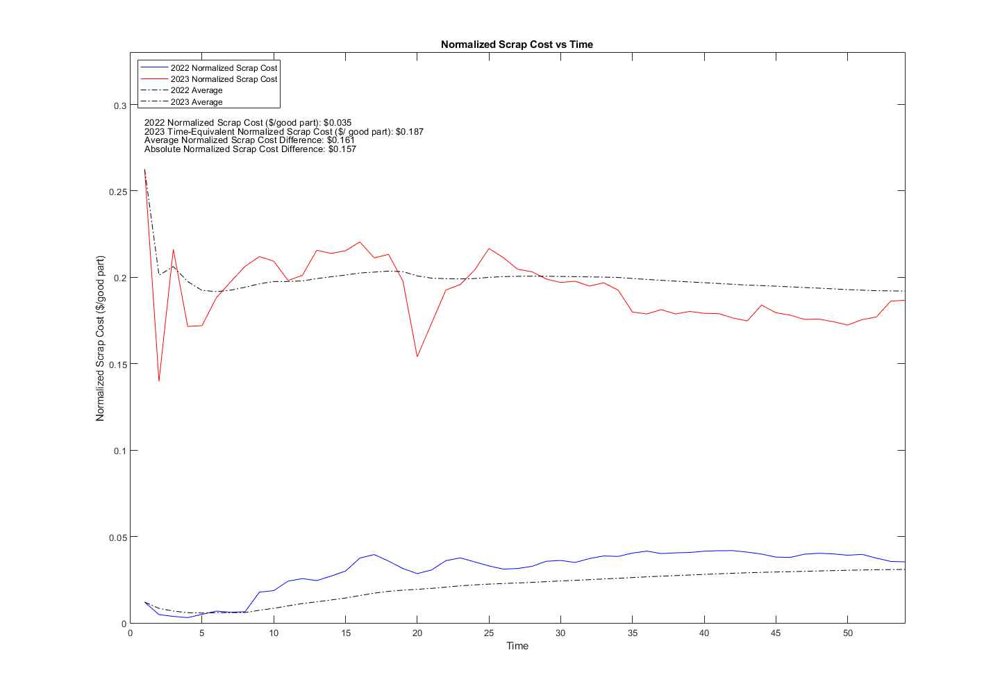
Recent Scrap Per Good Part (Animated)
DaysTable_Recent = readtable("TD11840_2023.xlsx",'Range','M117:M128'); Days_Recent = table2array(DaysTable_Recent)'; AvgArray_2022 = zeros(length(Days_Recent),1) + ScrapPercAvg_2022(end); AvgArray_2023 = zeros(length(Days_Recent),1) + ScrapPercAvg_2023(end); ScrapPercNowAnimShortAvg_2023 = NaN(1,length(Days_Recent),'single'); ScrapCostShort_2023 = table2array(readtable("TD11840_2023.xlsx",'Range','K117:K128')); GoodPartsShort_2023 = table2array(readtable("TD11840_2023.xlsx",'Range','H117:H128')); ScrapPercShortFig = figure('Units','pixels','position',[0 0 1440 1080]); for j = 1:length(Days_Recent) clf ScrapPercNowAnimShortAvg_2023(j) = sum(ScrapCostShort_2023(1:j))/(sum(GoodPartsShort_2023(1:j))); hold on plot(Days_Recent,AvgArray_2022,'Color','blue'); plot(Days_Recent,AvgArray_2023,'Color','blue'); plot(Days_Recent,ScrapPercNowAnimShortAvg_2023,'Color','red'); text(62.25, 0.22, sprintf('2022 Average Normalized Scrap Cost ($/good part): $%.3f',AvgArray_2022(j))) text(62.25,0.21, sprintf('2023 Average Time-Equivalent Normalized Scrap Cost ($/ good part): $%.3f',AvgArray_2023(j))) text(62.25, 0.20, sprintf('New Average Normalized Scrap Cost: $%.3f',ScrapPercNowAnimShortAvg_2023(j))) xlim([62 73]) ylim([0 .25]) xlabel('Time') ylabel('Normalized Scrap Cost ($/good part)') title('New Normalized Scrap Cost vs Time') legend('2022 Average Normalized Scrap Cost','2023 Average Normalized Scrap Cost','New Normalized Scrap Cost',Location='nw') movieVectorNew(j) = getframe(ScrapPercShortFig); end newWriter = VideoWriter('ScrapPercentageShortVsTime','MPEG-4'); newWriter.FrameRate = 5; open(newWriter); writeVideo(newWriter, movieVectorNew); close(newWriter); clc

Gross Scrap Cost vs Time (Animated)
ScrapCostNowAnim_2022 = NaN(1,54,'single'); ScrapCostNowAnim_2023 = NaN(1,54,'single'); ScrapCostDiff = NaN(1,54,'single'); ScrapCostFig = figure('Units','pixels','position',[0 0 1440 1080]); for j = 1:length(Days_2022) clf ScrapCostNowAnim_2022(j) = sum(ScrapCost_2022(1:j)); ScrapCostNowAnim_2023(j) = sum(ScrapCost_2023(1:j)); ScrapCostDiff(j) = abs(ScrapCostNowAnim_2023(j) - ScrapCostNowAnim_2022(j)); plot(Days_2022,ScrapCostNowAnim_2022); hold on plot(Days_2022,ScrapCostNowAnim_2023); text(1,4100, sprintf('2022 Total Scrap Cost: $%.2f',ScrapCostNowAnim_2022(j))) text(1,4000, sprintf('2023 Time-Equivalent Total Scrap Cost: $%.2f',ScrapCostNowAnim_2023(j))) text(15.25,4000, sprintf(' of $%.2f',TotalScrapCost_2023)) text(1,3900, sprintf('Absolute Scrap Cost Difference: $%.2f',ScrapCostDiff(j))) xlim([0 54]) ylim([0 4500]) xlabel('Time') ylabel('Scrap Cost') title('Scrap Cost vs Time') legend('2022 Scrap Cost','2023 Scrap Cost',Location='nw') movieVector(j) = getframe(ScrapCostFig); end myWriter = VideoWriter('ScrapCostVsTime','MPEG-4'); myWriter.FrameRate = 5; open(myWriter); writeVideo(myWriter, movieVector); close(myWriter); clc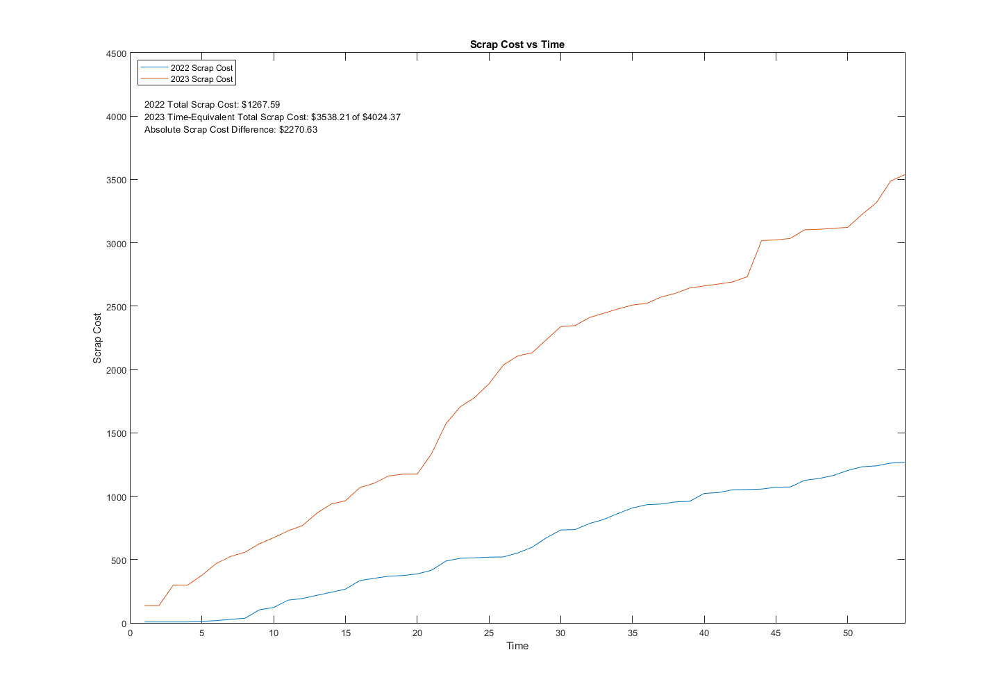
Good Parts vs Time
figure plot(Days_2022,GoodParts_2022); hold on plot(Days_2023,GoodParts_2023); CONSTANT_1 = size(1,Days_2022)*AveGoodParts_2022; CONSTANT_2 = size(1,Days_2023)*AveGoodParts_2023; plot(Days_2022,CONSTANT_1); plot(Days_2023,CONSTANT_2); xlim([0 length(GoodParts_2023)]) xlabel('Day') ylabel('Number of Good Parts') title('Good Parts vs Time') legend('2022 Good Parts','2023 Good Parts','2022 Average','2023 Average')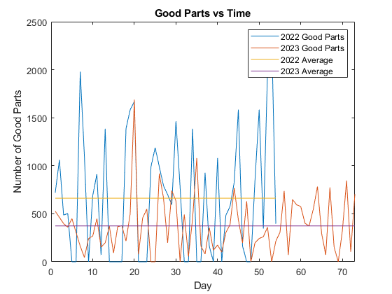
Gross Good Parts
figure plot(Days_2022,GoodPartsNow_2022); hold on plot(Days_2023,GoodPartsNow_2023); xlabel('Time') ylabel('Number of Parts') title('Good Parts vs Time') legend('2022 Good Parts','2023 Good Parts',Location='nw')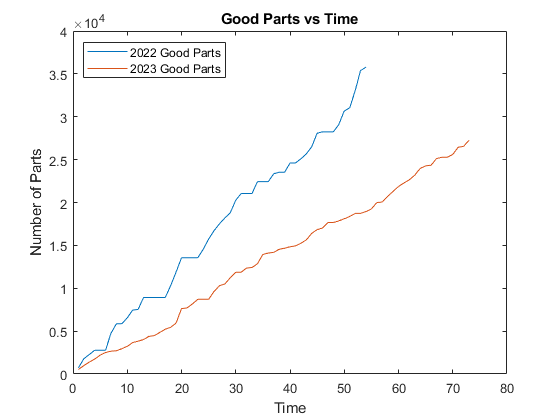
Gross Good Parts vs Time (Animated)
GoodPartsNowAnim_2022 = NaN(1,54,'single'); GoodPartsNowAnim_2023 = NaN(1,54,'single'); GoodPartsDiff = NaN(1,54,'single'); GoodPartsFig = figure('Units','pixels','position',[0 0 1440 1080]); for j = 1:length(Days_2022) clf GoodPartsNowAnim_2022(j) = sum(GoodParts_2022(1:j)); GoodPartsNowAnim_2023(j) = sum(GoodParts_2023(1:j)); GoodPartsDiff(j) = abs(GoodPartsNowAnim_2023(j) - GoodPartsNowAnim_2022(j)); plot(Days_2022,GoodPartsNowAnim_2022,'Color','Blue'); hold on plot(Days_2022,GoodPartsNowAnim_2023,'Color','Red'); text(1,37000, sprintf('2022 Good Parts: %.0f',GoodPartsNowAnim_2022(j))) text(1,36000, sprintf('2023 Time-Equivalent Good Parts: %.0f',GoodPartsNowAnim_2023(j))) text(12.85,36000, sprintf(' of %.0f',TotalGoodParts_2023)) text(1,35000, sprintf('Absolute Good Parts Difference: %.0f',GoodPartsDiff(j))) xlim([0 54]) ylim([0 40000]) xlabel('Time') ylabel('Number of Good Parts') title('Good Parts vs Time') legend('2022 Good Parts','2023 Good Parts',Location='nw') movieVector(j) = getframe(GoodPartsFig); end myWriter = VideoWriter('GoodPartsVsTime','MPEG-4'); myWriter.FrameRate = 5; open(myWriter); writeVideo(myWriter, movieVector); close(myWriter); clc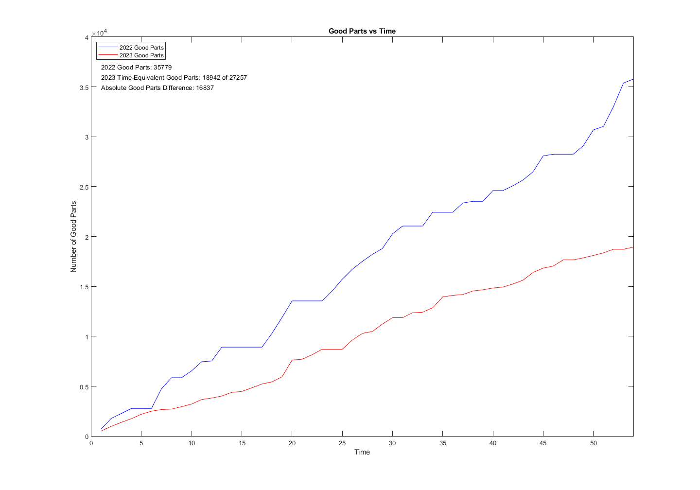
Good Parts % vs Time (Animated)
PercBadPartsNowAnim_2022 = NaN(1,max(Days_2022),'single'); PercBadPartsNowAnim_2023 = NaN(1,max(Days_2022),'single'); PercBadPartsDiff = NaN(1,max(Days_2022),'single'); PercBadPartAvg_2022 = NaN(1,max(Days_2022),'single'); PercBadPartAvg_2023 = NaN(1,max(Days_2022),'single'); PercBadPartAvgDiff = NaN(1,max(Days_2022),'single'); PercBadPartsFig = figure('Units','pixels','position',[0 0 1440 1080]); for j = 1:length(Days_2022) clf PercBadPartsNowAnim_2022(j) = 100*sum(GoodParts_2022(1:j))/(sum(BadParts_2022(1:j) + GoodParts_2022(1:j))); PercBadPartAvg_2022(j) = mean(PercBadPartsNowAnim_2022(1:j)); PercBadPartsNowAnim_2023(j) = 100*sum(GoodParts_2023(1:j))/(sum(BadParts_2023(1:j) + GoodParts_2023(1:j))); PercBadPartAvg_2023(j) = mean(PercBadPartsNowAnim_2023(1:j)); PercBadPartsDiff(j) = abs(PercBadPartsNowAnim_2023(j) - PercBadPartsNowAnim_2022(j)); PercBadPartAvgDiff(j) = abs(PercBadPartAvg_2023(j) - PercBadPartAvg_2022(j)); plot(Days_2022,PercBadPartsNowAnim_2022,'Color','blue'); hold on plot(Days_2022,PercBadPartsNowAnim_2023,'Color','red'); plot(Days_2022,PercBadPartAvg_2022,"-.",'Color','black'); plot(Days_2022,PercBadPartAvg_2023,"-.",'Color','black'); text(1,102, sprintf('2022 Good Part Percentage: %.2f',PercBadPartsNowAnim_2022(j))) text(1,101.5, sprintf('2023 Time-Equivalent Good Parts Percentage: %.2f',PercBadPartsNowAnim_2023(j))) text(1,101, sprintf('Average Good Part Percentage Difference: %.2f',PercBadPartAvgDiff(j))) text(1,100.5, sprintf('Absolute Good Part Percentage Difference: %.2f',PercBadPartsDiff(j))) xlim([0 54]) ylim([80 105]) xlabel('Time') ylabel('Good Part Percentage') title('Good Part Percentage vs Time') legend('2022 Good Part Percentage','2023 Good Part Percentage','2022 Average','2023 Average',Location='nw') movieVector(j) = getframe(PercBadPartsFig); end myWriter = VideoWriter('PercGoodPartsVsTime','MPEG-4'); myWriter.FrameRate = 5; open(myWriter); writeVideo(myWriter, movieVector); close(myWriter); clc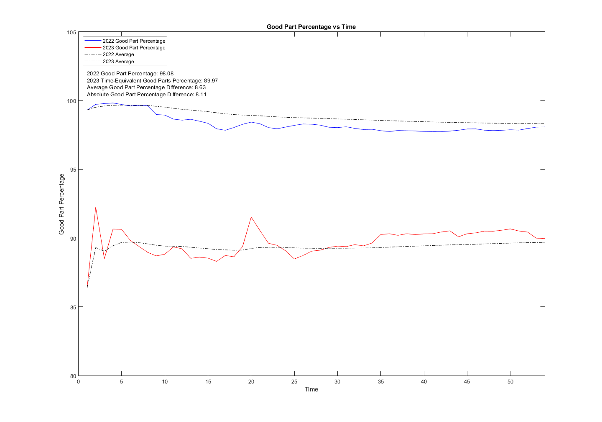
Gross Bad Parts (Animated)
figure plot(Days_2022,BadPartsNow_2022); hold on plot(Days_2023,BadPartsNow_2023); xlabel('Time') ylabel('Number of Parts') title('Bad Parts vs Time') legend('2022 Bad Parts','2023 Bad Parts',Location='nw')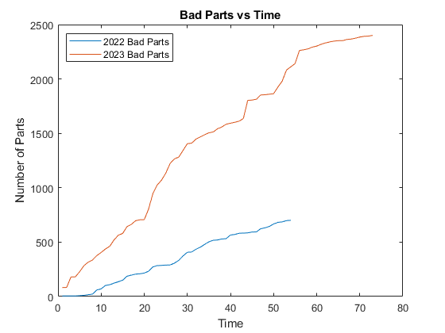
Bad Parts % vs Time (Animated)
PercBadPartsNowAnim_2022 = NaN(1,max(Days_2022),'single'); PercBadPartsNowAnim_2023 = NaN(1,max(Days_2022),'single'); PercBadPartsDiff = NaN(1,max(Days_2022),'single'); PercBadPartAvg_2022 = NaN(1,max(Days_2022),'single'); PercBadPartAvg_2023 = NaN(1,max(Days_2022),'single'); PercBadPartAvgDiff = NaN(1,max(Days_2022),'single'); PercBadPartsFig = figure('Units','pixels','position',[0 0 1440 1080]); for j = 1:length(Days_2022) clf PercBadPartsNowAnim_2022(j) = 100*sum(BadParts_2022(1:j))/(sum(BadParts_2022(1:j) + GoodParts_2022(1:j))); PercBadPartAvg_2022(j) = mean(PercBadPartsNowAnim_2022(1:j)); PercBadPartsNowAnim_2023(j) = 100*sum(BadParts_2023(1:j))/(sum(BadParts_2023(1:j) + GoodParts_2023(1:j))); PercBadPartAvg_2023(j) = mean(PercBadPartsNowAnim_2023(1:j)); PercBadPartsDiff(j) = abs(PercBadPartsNowAnim_2023(j) - PercBadPartsNowAnim_2022(j)); PercBadPartAvgDiff(j) = abs(PercBadPartAvg_2023(j) - PercBadPartAvg_2022(j)); plot(Days_2022,PercBadPartsNowAnim_2022,'Color','blue'); hold on plot(Days_2022,PercBadPartsNowAnim_2023,'Color','red'); plot(Days_2022,PercBadPartAvg_2022,"-.",'Color','black'); plot(Days_2022,PercBadPartAvg_2023,"-.",'Color','black'); text(1,17.5, sprintf('2022 Bad Part Percentage: %.2f',PercBadPartsNowAnim_2022(j))) text(1,17, sprintf('2023 Time-Equivalent Bad Parts Percentage: %.2f',PercBadPartsNowAnim_2023(j))) text(1,16.5, sprintf('Average Bad Part Percentage Difference: %.2f',PercBadPartAvgDiff(j))) text(1,16, sprintf('Absolute Bad Part Percentage Difference: %.2f',PercBadPartsDiff(j))) xlim([0 54]) ylim([0 20]) xlabel('Time') ylabel('Bad Part Percentage') title('Bad Part Percentage vs Time') legend('2022 Bad Part Percentage','2023 Bad Part Percentage','2022 Average','2023 Average',Location='nw') movieVector(j) = getframe(PercBadPartsFig); end myWriter = VideoWriter('PercBadPartsVsTime','MPEG-4'); myWriter.FrameRate = 5; open(myWriter); writeVideo(myWriter, movieVector); close(myWriter); clc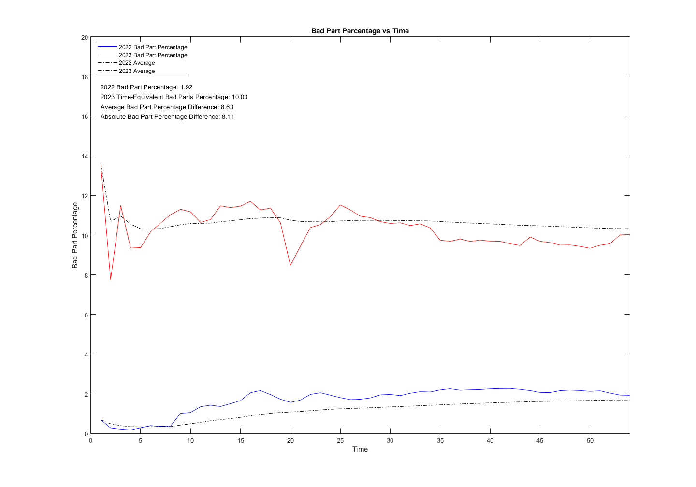
Gross Bad Parts vs Time (Animated)
BadPartsNowAnim_2022 = NaN(1,54,'single'); BadPartsNowAnim_2023 = NaN(1,54,'single'); BadPartsDiff = NaN(1,54,'single'); BadPartsFig = figure('Units','pixels','position',[0 0 1440 1080]); for j = 1:length(Days_2022) clf BadPartsNowAnim_2022(j) = sum(BadParts_2022(1:j)); BadPartsNowAnim_2023(j) = sum(BadParts_2023(1:j)); BadPartsDiff(j) = abs(BadPartsNowAnim_2023(j) - BadPartsNowAnim_2022(j)); plot(Days_2022,BadPartsNowAnim_2022,'Color','Blue'); hold on plot(Days_2022,BadPartsNowAnim_2023,'Color','Red'); text(1,2100, sprintf('2022 Bad Parts: %.0f',BadPartsNowAnim_2022(j))) text(1,2050, sprintf('2023 Time-Equivalent Bad Parts: %.0f',BadPartsNowAnim_2023(j))) text(12.1,2050, sprintf(' of %.0f',TotalBadParts_2023)) text(1,2000, sprintf('Absolute Bad Parts Difference: %.0f',BadPartsDiff(j))) xlim([0 54]) ylim([0 2300]) xlabel('Time') ylabel('Number of Bad Parts') title('Bad Parts vs Time') legend('2022 Bad Parts','2023 Bad Parts',Location='nw') movieVector(j) = getframe(BadPartsFig); end myWriter = VideoWriter('BadPartsVsTime','MPEG-4'); myWriter.FrameRate = 5; open(myWriter); writeVideo(myWriter, movieVector); close(myWriter); clc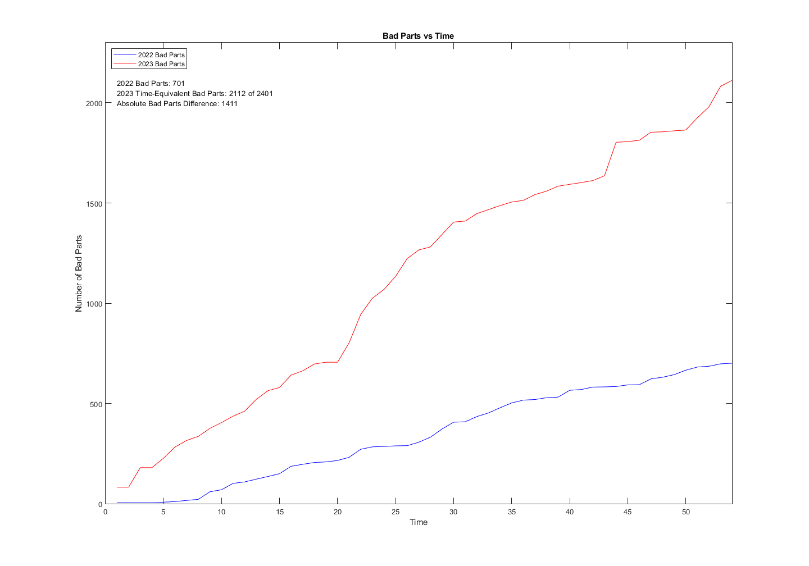